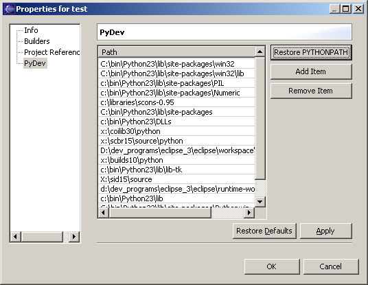

Last Site Update: 14 February 2005 | Latest Version: 0.9.0
| Features | Editor | Debugger | Code Completion | Templates | Code Coverage | Content Assistants | Refactoring | Tasks | PyLint |


Code Completion
Notes for release 0.8.5
Code completion is slowly getting to where I want. It is still not finished (missing parameters on methods), but aside from that, I think it has already come to a very good level.
Now, how to use it:
First thing you have to do is enabling it. To do it, you have to go to
Window->preferences->PyDev->Code Completion
The screen below should show. Check the Use Code completion (you probably also want to check Autocomplete on '.').

After setting the preferences, you have to set the PYTHONPATH you want to use for a certain project. Right click on the project root on the navigator and choose properties. The screen below should show. You can click on Restore PYTHONPATH to get the default PYTHONPATH in your machine (if it does not run, please file a bug report).
NOTE: In the JAVA package explorer the PyDev properties do not show, so, you really MUST use the NAVIGATOR.

That's it, now the code completion should be ready for use. It is activated with Ctrl+Space and when writing '.' (if you selected the Autocomplete on '.' !
If you want to see code completion in action, here are some snapshots on the current uses.
Explanation: Code completion is now (almost) all in JAVA. Based on the PYTHONPATH provided, each file is assumed a module and parsed (on request) for its code completion tokens, and lots of heuristics are used to get definitions of variables, hierarchies, attributes, etc.
The only thing that still requires a python process for the completion is the search for compiled modules like qt (or other .dll, .pyd, etc) and builtins (e.g. object, sys, etc.). It is still far from perfect, but I think that much has already been achieved (wait for more in the next release).